Mars Simulation Project
|
| 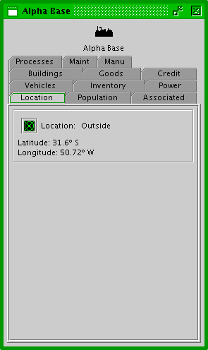 |
| Settlement Info Window - Location Tab |
The settlement info window displays information about an individual settlement. The top of the window displays the settlement's name and icon. A number of tab panels are available for viewing particular information.
Location - The location tab panel shows the location of the settlement in latitude and longitude. The green target icon button at the left will recenter the Mars Navigator map on the settlement's location.
| 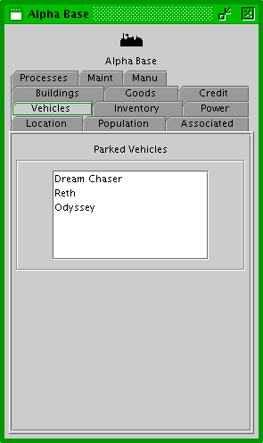 |
| Settlement Info Window - Vehicles Tab |
Vehicles - The vehicles tab panel lists the rovers currently parked at the settlement. Each rover can be double clicked to open up its info window.
| 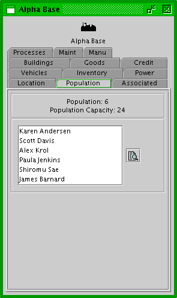 |
| Settlement Info Window - Population Tab |
Population - The population tab panel displays information about the settlement's population.
The top box displays the current population and the normal capacity of the settlement. A settlement can have more inhabitants than its capacity, but it will then be crowded.
The list below contains the names of all people currently inhabiting the settlement. When any of the names is double clicked, the person's info window will open.
The monitor icon next to the resident list will open a custom tab in the monitor tool for the inhabitants of the settlement.
| 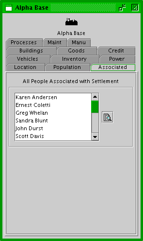 |
| Settlement Info Window - Associated Population Tab |
Associated Population - The associated population tab panel displays information about all people associated with the settlement.
The list displays all people currently inhabiting the settlement, working outside the settlement, or on a mission where the settlement is the mission's home.
The monitor icon next to the person list will open a custom tab in the monitor tool for associated people for this settlement.
| 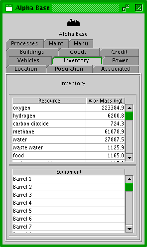 |
| Settlement Info Window - Inventory Tab |
Inventory - The inventory tab panel displays information about the settlement's stores of resources and equipment.
The resources box shows the mass of particular resources in the settlement's storage.
The equipment box shows the number of particular equipment in the settlement's storage.
| 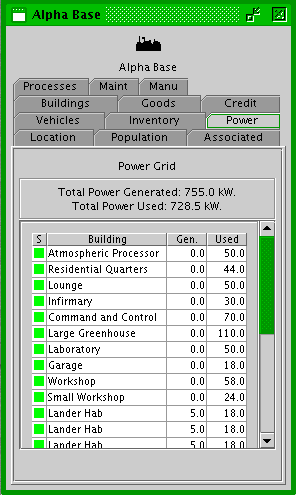 |
| Settlement Info Window - Power Tab |
Power - The Power Grid tab panel displays information about the settlement's power grid.
The top box shows the total power currently being generated by the settlement and the total power currently being used.
In the bottom box, there is a table showing the status of individial buildings in the settlement. The first column is a status square that is green if the building is powered up, yellow if it is powered down, and red if it has no power. The next column is the type of building. The next column is the power (kW) currently generated by the building. The last column is the power (kW) currently being used by the building.
| 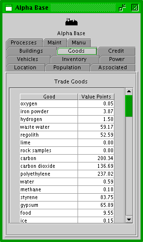 |
| Settlement Info Window - Goods Tab |
Goods - The Goods tab panel displays the value of trade goods at the settlement.
| 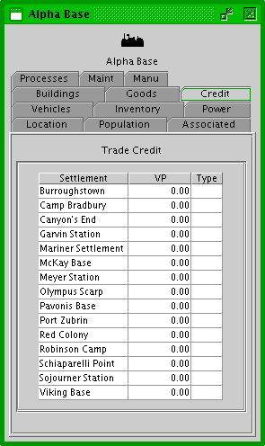 |
| Settlement Info Window - Credit Tab |
Credit - The Credit tab panel displays the amount of trade credit or debt this settlement has with other settlements.
| 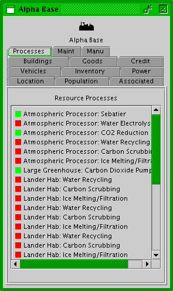 |
| Settlement Info Window - Processes Tab |
Processes - The Processes tab panel displays all of the resource processes within the settlement. The square to the left of the process is green if the process is currently running, or red if it's not.
| 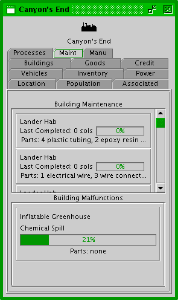 |
| Settlement Info Window - Maint Tab |
Maint - The Maint tab panel displays the maintenance and malfunction status of all buildings in the settlement.
The top box on the panel shows the maintenance status of all buildings in the settlement. It shows the number of sols since the last periodic maintenance was completed. The progress bar shows the progress for next maintenance.
The bottom box shows any current malfunctions at the settlement. Each malfunction box shows the building location of the malfunction and the repair progress.
| 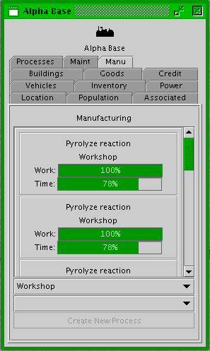 |
| Settlement Info Window - Manu Tab |
Manu - The Manu tab panel displays the current manufacturing processes in the settlement.
The top box on the panel shows a list of all the current manufacturing processes in the settlement. Each process has a panel that shows the process name, which building it is being performed in, a progress bar for work completed on the process, and a progress bar showing the process time completed for the process. Each process panel has a tool tip that displays additional information about the process.
The top drop down list allows the user to select a manufacturing building in which to create a new manufacturing process.
The second drop down list shows all of the manufacturing processes that can currently be created in the selected building. Note: this list is limited by the tech level of the selected building, the input materials available at the settlement, and if there is room for another process in the selected building. The user can select a manufacturing process to create.
The "Create New Process" button at the bottom allows the user to create a new manufacturing process with the selected building and the selected process. This process will appear on the list, but the settlers will only be able to work on it if they have the minimum materials science skill level required.
| 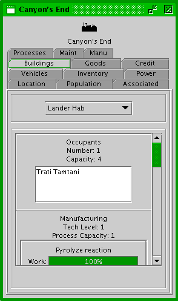 |
| Settlement Info Window - Building Tab |
Building - The building tab panel displays information about the settlement's buildings.
The top box on the panel has a drop-down building selector from which the user can select any of the settlement's buildings.
The bottom box has various panels showing the functionality of the building. The panels are function-specific and a panel will only show for the building if that building has the function it's for.
| 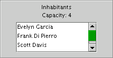 |
| Settlement Info Window - Building Tab - Life Support |
Life Support - The life support building function panel shows the current number of people in the building and the capacity it was designed for. More people can be in a building than its capacity, but it will then be crowded and people prefer not to be in crowded buildings.
 |
| Settlement Info Window - Building Tab - Medical Care |
Medical Care - The medical care building function panel shows information about the building's infirmary.
The panel shows the number of sick beds in the infirmary, as well as the number of physicians currently treating patients in the building.
The bottom list displays the current patients in the infirmary and their condition.
| 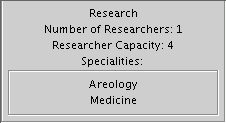 |
| Settlement Info Window - Building Tab - Research |
Research - The research building function panel shows information about the building's research laboratory.
The top of the panel shows the number of researchers currently using the laboratory and the number of researchers the laboratory can support.
The bottom panel shows a list of the science specialities the laboratory supports.
| 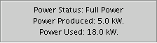 |
| Settlement Info Window - Building Tab - Power |
Power - The power building function panel shows information about the building's power status.
The power status can either be "Full Power", "Power Down" or "No Power".
The power currently produced and used by the building are also displayed.
| 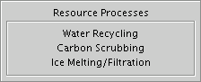 |
| Settlement Info Window - Building Tab - Resource Processes |
Resource Processes - The resource processes building function panel shows a list of the resource processes the building performs.
| 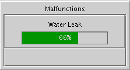 |
| Settlement Info Window - Building Tab - Malfunctions |
Malfunctions - The malfunctions building function panel shows a list of malfunctions that are currently occuring in the building. Each malfunction has a progress bar that shows it's percentage of being repaired.
| 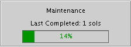 |
| Settlement Info Window - Building Tab - Maintenance |
Maintenance - The maintenance building function panel shows how much time (Sols) has passed since the last periodic maintenance on the building. The progress bar shows the progress of maintenance on the building.
| 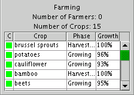 |
| Settlement Info Window - Building Tab - Farming |
Farming - The farming building function panel shows information on the building's greenhouse.
The top of the panel shows the number of farmers currently working in the greenhouse and the number of crops in the greenhouse.
At the bottom of the panel is a list of the crops growing at the greenhouse. The first column shows the condition of the crop as a color square: green for excellent condition, yellow for average condition, and red for poor condition. The third column is the phase the crop is in, either "planting", "growing" or "harvesting". The last column shows the percentage of the growing phase for the crop. Some crops take longer to grow than others.
| 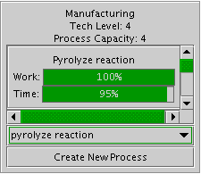 |
| Settlement Info Window - Building Tab - Manufacturing |
Manufacturing - The manufacturing building function panel shows information on the building's manufacturing workshop.
The second line shows the tech level of the building (see "conf/tech_level.txt").
The third line shows the process capacity of the building. This is the number of active processes that the building can support at a time.
The next box on the panel shows a list of all the current manufacturing processes in the building. Each process has a panel that shows the process name, a progress bar for work completed on the process, and a progress bar showing the process time completed for the process. Each process panel has a tool tip that displays additional information about the process.
The drop down list shows all of the manufacturing processes that can currently be created in the building. Note: this list is limited by the tech level of the building, the input materials available at the settlement, and if there is room for another process in the building. The user can select a manufacturing process to create.
The "Create New Process" button at the bottom allows the user to create a new manufacturing process with the building and the selected process. This process will appear on the list, but the settlers will only be able to work on it if they have the minimum materials science skill level required.
Please send questions or comments to mars-sim-users@lists.sourceforge.net
Mars Simulation Project copyright © Scott Davis, 2008
Map data courtesy of NASA Jet Propulsion Laboratory